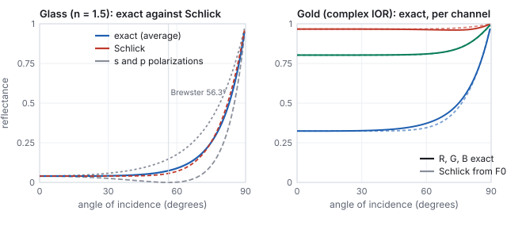
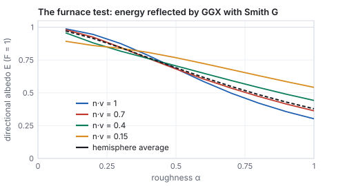
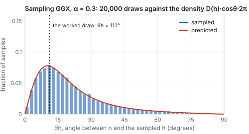
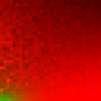

This chapter links to the course’s interactive demos and to original papers on the open web, and it uses MathJax for its formulas. Read it through the course website (or download the file and open it in a browser); a Canvas inline preview will reach neither the demos nor the math. All chapters.
Light Transport and PBR
The illumination chapter computes a point’s color from the lights, the normal, and the eye, and nothing else in the scene. This chapter writes down the equation that balances the light energy instead, the rendering equation, reads it term by term in the radiometric units of the color chapter, and rebuilds the material term on physical foundations: the BRDF and its two laws, microfacets with the exact Fresnel equations for glass and for gold, the furnace test that measures how much energy a model loses, and the two sliders every modern engine exposes. It then does what a renderer must do with such a model: draw directions from it, evaluate it under a whole sky by the split-sum trick, and extend it past opaque surfaces to glass and skin. Every formula is evaluated by hand at least once, and every figure is computed from the same formulas. The history, from Whitted’s rays to Kajiya’s equation, is in the history chapter; the algorithms that solve the equation are in the ray-tracing chapter.
- What the local model gets wrong
- Radiance, and the rendering equation term by term
- The BRDF, its laws, and why Phong is not one
- Microfacets: D, G and F
- Fresnel exactly: dielectrics and conductors
- Energy: the furnace test and multiple scattering
- Metallic and roughness, and the principled model
- Sampling the BRDF
- A whole sky at once: image-based lighting and the split sum
- Beyond opaque surfaces
- Solving the equation: path tracing and real time
- Exercises
1 · What the local model gets wrong
A local illumination model (Phong, as the illumination chapter builds it) lights a point from the lights, the normal, and the eye, and nothing else in the scene; the ambient constant stands in for all the light that bounces. Three things follow that no patch can fix.
- It can reflect more light than arrives. Nothing in \(k_d\), \(k_s\) and the exponent \(s\) is tied to energy; Section 3 computes how much a plain Phong lobe can over-reflect.
- It is not symmetric. Swapping the light and the eye should leave the amount of reflected light unchanged (Helmholtz reciprocity); the Phong specular term does not promise it.
- It has no indirect light. The red wall of the Cornell box tints the white box beside it in a photograph and in a path-traced render (the ray-tracing chapter renders one); a local model paints the box white and adds a constant.
They are one gap: the local model never balances the light energy at a point. The equation that does was written down by Kajiya in 1986 (the history chapter, section 3).
2 · Radiance, and the rendering equation term by term
The equation is a statement about radiance, so the unit comes first. The color chapter defines the radiometric quantities; three of them appear here. Radiant flux is power, in watts. Irradiance \(E\) is the flux arriving per unit area of a surface, in watts per square meter; it is what a light meter held against the surface reads, and it already includes the cosine factor, because a beam at a grazing angle spreads its watts over more square meters (Lambert’s argument). Radiance \(L\) is flux per unit area per unit solid angle, in watts per square meter per steradian: the amount of light traveling along one ray, in one direction, through one small patch. Radiance is the quantity a camera pixel or a retinal cell measures, it does not change along a ray through empty space, and it is what a renderer computes for every pixel. The two are related by the cosine: the irradiance at a point is the incoming radiance summed over the hemisphere with each direction weighted by \(\mathbf{n}\cdot\omega_i\), \(E = \int_\Omega L_i(\omega_i)\,(\mathbf{n}\cdot\omega_i)\,d\omega_i\).

Read it in words, one factor at a time.
| Symbol | Name | Meaning |
|---|---|---|
| \(L_o(\mathbf{x},\omega_o)\) | outgoing radiance | the light leaving \(\mathbf{x}\) toward the eye: the number the pixel will show |
| \(L_e(\mathbf{x},\omega_o)\) | emitted radiance | nonzero only on light sources; the ceiling panel of the Cornell box |
| \(L_i(\mathbf{x},\omega_i)\) | incoming radiance | the light arriving at \(\mathbf{x}\) from direction \(\omega_i\); it is some other point’s \(L_o\) |
| \(f_r\) | BRDF | the material: what fraction of light from \(\omega_i\) leaves toward \(\omega_o\) (Section 3) |
| \(\mathbf{n}\cdot\omega_i\) | cosine factor | light arriving at a grazing angle is spread over more surface, so each unit of surface gets less |
| \(\int_\Omega \dots d\omega_i\) | the hemisphere integral | add up the contributions of every incoming direction |
It is hard for one reason: \(L_i\) on the right is some other point’s \(L_o\). Light bounces, so the equation refers to itself, and the unknown appears on both sides. That self-reference is exactly the indirect light the local model lacks: the red wall’s \(L_o\) is the white box’s \(L_i\).
| light | \(L_i\) | angle to \(\mathbf{n}\) | \(\mathbf{n}\cdot\omega_i\) | \(f_r\, L_i\, (\mathbf{n}\cdot\omega_i)\) |
|---|---|---|---|---|
| 1 | 2.0 | 20° | 0.940 | \(0.191\times2.0\times0.940 = 0.359\) |
| 2 | 0.8 | 60° | 0.500 | \(0.191\times0.8\times0.500 = 0.076\) |
| 3 | 0.5 | 75° | 0.259 | \(0.191\times0.5\times0.259 = 0.025\) |
| \(L_o\) | 0.460 | |||
3 · The BRDF, its laws, and why Phong is not one
- Reciprocity: \(f_r(\omega_i,\omega_o) = f_r(\omega_o,\omega_i)\).
- Energy conservation: for every \(\omega_o\), \(\int_\Omega f_r(\omega_i,\omega_o)\,(\mathbf{n}\cdot\omega_i)\,d\omega_i \le 1\). A surface cannot reflect more than it receives.
The simplest BRDF is the constant one. If a matte surface reflects a fraction \(\rho\) of the light it receives, equally in all directions, then the energy law forces \(f_r = \rho/\pi\), because \(\int_\Omega (\mathbf{n}\cdot\omega_i)\,d\omega_i = \pi\) (the cosine integrated over the hemisphere). That is where the \(\pi\) in the worked example above came from, and it is a first sign of the difference between an ad hoc model and a physical one: in Phong, \(k_d\) is a free number; here, \(\rho/\pi\) is a number tied to a law.
| \(s\) | 1 | 4 | 8 | 32 | 128 |
|---|---|---|---|---|---|
| reflected / arriving | 2.094 | 1.047 | 0.628 | 0.185 | 0.048 |
3.1 Measured BRDFs
A BRDF need not be a formula. A gonioreflectometer holds a flat sample, a light and a detector on motorized arms, and records the reflected radiance for every pair of directions; the MERL database (Matusik and others, 2003) did this for 100 materials at \(90\times90\times180\) direction pairs each, about 1.5 million values per color channel per material. A renderer can look such a table up directly, interpolating between samples, and it is the ground truth against which the analytic models below are judged: the model of Section 4 fits the measured metals and plastics well, and fails on fabrics and on layered materials (car paint, iridescent shells), which is why those get models of their own. The lesson to keep: a BRDF is a function of four angles that can be measured, and any formula is an approximation of a measurement.
4 · Microfacets: D, G and F
Physically based rendering (PBR) models a rough surface as a field of microscopic mirrors, the microfacets. Light arriving from \(\omega_i\) leaves toward \(\omega_o\) only off the facets whose normal is the half-vector \(\mathbf{h}\); the rest reflect elsewhere, are shadowed, or shadow their neighbors. The Cook–Torrance specular BRDF collects those three effects into three factors:
4.1 D: where the facets point
The modern default is GGX (also called Trowbridge–Reitz), with a single roughness parameter \(\alpha\):
\[ D(\mathbf{h}) \;=\; \frac{\alpha^2}{\pi\,\big((\mathbf{n}\cdot\mathbf{h})^2(\alpha^2 - 1) + 1\big)^2}. \]

4.2 G: shadowing and masking
Facets hide one another. \(G\) is the fraction of facets that are both lit (not shadowed from \(\omega_i\)) and visible (not masked from \(\omega_o\)); the Smith form assumes the two are independent and multiplies one factor per direction. For GGX the exact per-direction factor is
\[ G_1(\mathbf{x}) \;=\; \frac{2\,(\mathbf{n}\cdot\mathbf{x})}{(\mathbf{n}\cdot\mathbf{x}) + \sqrt{\alpha^2 + (1-\alpha^2)(\mathbf{n}\cdot\mathbf{x})^2}}, \qquad G = G_1(\omega_i)\, G_1(\omega_o). \]Near the normal \(G_1 \approx 1\); at grazing angles on rough surfaces it falls toward 0, which is what keeps the denominator’s \(1/(\mathbf{n}\cdot\omega)\) from blowing up at the silhouette.
4.3 F: Fresnel
A dielectric reflects a few percent head-on and almost everything at grazing incidence (look along a table top toward a window). Schlick’s approximation captures it with one number per material, the reflectance at normal incidence \(F_0\):
\[ F(\omega_i, \mathbf{h}) \;=\; F_0 + (1 - F_0)\,\big(1 - \mathbf{v}\cdot\mathbf{h}\big)^5 . \]| material | \(F_0\) (R, G, B) | type |
|---|---|---|
| water | 0.02 | dielectric |
| plastic, glass, skin, wood, stone | 0.02 to 0.05 (0.04 is the universal default) | dielectric |
| diamond | 0.17 | dielectric |
| iron | 0.56, 0.57, 0.58 | metal |
| aluminum | 0.91, 0.92, 0.92 | metal |
| copper | 0.95, 0.64, 0.54 | metal |
| gold | 1.00, 0.71, 0.29 | metal |
| silver | 0.95, 0.93, 0.88 | metal |
The table is the physics behind the metallic slider. Every dielectric has nearly the same gray \(F_0\) of about 0.04 and gets its color from light that enters the surface, scatters, and leaves diffusely. A metal has a large, colored \(F_0\) and no diffuse term at all, because the conduction electrons absorb whatever is not reflected. Where the numbers come from is Section 5.
- \(\omega_i = (-0.500, 0, 0.866)\), \(\omega_o = (0.500, 0, 0.866)\), so \(\mathbf{n}\cdot\omega_i = \mathbf{n}\cdot\omega_o = 0.866\).
- \(\mathbf{h} = \text{normalize}(\omega_i + \omega_o) = (0, 0, 1) = \mathbf{n}\): the eye sits exactly in the mirror direction, so \(\mathbf{n}\cdot\mathbf{h} = 1\) and \(\omega_o\cdot\mathbf{h} = 0.866\).
- \(D = \alpha^2/\pi = 0.09/\pi = \) 3.537 (the peak of the \(\alpha = 0.3\) curve).
- \(G_1(\omega_i) = 2(0.866)/(0.866 + \sqrt{0.09 + 0.91\cdot0.750}) = 0.9926\); the same for \(\omega_o\); \(G = 0.9926^2 = \) 0.985.
- \(F = 0.04 + 0.96\,(1 - 0.866)^5 = 0.04 + 0.96\times4.3\times10^{-5} = \) 0.0400: at this angle Fresnel adds nothing.
- \(f_r^{\text{spec}} = \dfrac{3.537 \times 0.985 \times 0.040}{4 \times 0.866 \times 0.866} = \dfrac{0.1394}{3.0} = \) 0.0465.
node -e (paste the whole snippet as the argument), or in the browser console.
- Evaluate the BRDF at a geometry the text did not: light at \(20^\circ\) on one side, eye at \(50^\circ\) on the other, \(\alpha = 0.3\), plastic.
const PI=Math.PI;const D=(nh,a)=>a*a/(PI*((nh*nh*(a*a-1)+1)**2)); const G1=(nx,a)=>2*nx/(nx+Math.sqrt(a*a+(1-a*a)*nx*nx));const F=(F0,vh)=>F0+(1-F0)*(1-vh)**5; const n=[0,0,1];const dir=(deg)=>[Math.sin(deg*PI/180),0,Math.cos(deg*PI/180)]; const dot=(a,b)=>a[0]*b[0]+a[1]*b[1]+a[2]*b[2];const norm=(v)=>{const L=Math.hypot(...v);return v.map(x=>x/L);}; const l=dir(-20),v=dir(50),h=norm([l[0]+v[0],l[1]+v[1],l[2]+v[2]]);const a=0.3; const f=D(dot(n,h),a)*G1(dot(n,l),a)*G1(dot(n,v),a)*F(0.04,dot(v,h))/(4*dot(n,l)*dot(n,v)); console.log('h angle',(Math.acos(dot(n,h))*180/PI).toFixed(1),'D',D(dot(n,h),a).toFixed(4),'f',f.toFixed(5));Expected output:h angle 15.0 D 1.2571 f 0.02022. The half-vector sits halfway between the two directions, \(15^\circ\) off the normal, and the highlight is less than half the mirror-configuration value 0.0465. - Check the Phong energy table by numerical integration instead of the closed form:
let s=0;const N=2000;for(let i=0;i<N;i++){const th=(i+0.5)/N*Math.PI/2; s+=Math.cos(th)**32*Math.cos(th)*Math.sin(th)*(Math.PI/2/N);} console.log((2*Math.PI*s).toFixed(4),'vs',(2*Math.PI/34).toFixed(4));Expected:0.1848 vs 0.1848. Change 32 to 4 and the integral exceeds 1. - In the BRDF-lobes demo, set roughness to 0.3 and switch the model between Phong and GGX: the GGX lobe keeps the skirt the figure above shows, and the teapot’s highlight gains a halo.
5 · Fresnel exactly: dielectrics and conductors
Schlick’s curve is a fit. The quantity it fits is given exactly by Fresnel’s equations, which follow from the wave theory of light at a boundary between two media, and knowing them explains the \(F_0\) table, tells where the fit is wrong, and separates the two kinds of material by physics rather than by slider.
| \(\theta_i\) | 0° | 30° | 45° | 56.3° | 60° | 75° | 85° |
|---|---|---|---|---|---|---|---|
| \(R_s\) | 0.040 | 0.058 | 0.092 | 0.148 | 0.177 | 0.399 | 0.732 |
| \(R_p\) | 0.040 | 0.025 | 0.009 | 0.000 | 0.002 | 0.107 | 0.493 |
| exact \(F\) | 0.040 | 0.042 | 0.050 | 0.074 | 0.089 | 0.253 | 0.613 |
| Schlick | 0.040 | 0.040 | 0.042 | 0.057 | 0.070 | 0.255 | 0.649 |

So the two material recipes of Section 7 are not a convention. A dielectric has real \(n\) near 1.5, \(F_0 \approx 0.04\), and transmits what it does not reflect into a body that scatters it back diffusely. A conductor has large \(k\), colored \(F_0\) of 0.5 to 1, and absorbs within a few nanometers what it does not reflect, so it has no diffuse term. Everything in between (a dusty chrome, a metallic paint with flakes in a clear binder) is a mixture of the two kinds over the area of a pixel.
6 · Energy: the furnace test and multiple scattering
The energy law of Section 3 is a promise; the furnace test checks it. Put a surface with \(F = 1\) (a perfect mirror facet, nothing absorbed) inside a uniformly lit white sphere, a furnace. A model that conserves energy renders it invisible: it reflects everything, so it is exactly as bright as its surroundings. The directional albedo \(E(\omega_o) = \int f_r (\mathbf{n}\cdot\omega_i)\,d\omega_i\) is that brightness, and the figure below computes it for the GGX model by drawing 20,000 directions per point from the distribution of Section 8.

The fix is multiple-scattering compensation (Kulla and Conty, 2017; Turquin, 2019). The energy lost from a single bounce is \(1 - E(\omega_o)\); a second lobe, shaped so that it integrates to exactly that missing fraction and weighted by the average Fresnel reflectance (a metal returns almost all of the inter-facet light, a dielectric only a few percent of it), is added to the BRDF, and the sum passes the furnace test to within a percent. The tables of \(E\) that the compensation needs are precomputed once per roughness and viewing angle; the figure above is that table’s first row. The same test catches a second, older sin: the diffuse and specular terms of a dielectric must share the energy, so the diffuse lobe of a physically careful model is scaled by \(1 - F\), or by \(1 - E_{\text{spec}}\), rather than added at full strength.
7 · Metallic and roughness, and the principled model
Every engine exposes the model above through two artist sliders on top of a base color:
- roughness sets \(\alpha\) (most engines use \(\alpha = \text{roughness}^2\) so that the slider feels linear; Unity’s smoothness is \(1 - \) roughness);
- metallic blends between two material recipes. At 0 the surface is a dielectric: a diffuse term \(\text{base}/\pi\) under a weak white specular with \(F_0 = 0.04\). At 1 it is a metal: no diffuse term and a specular with \(F_0 = \text{base}\).

These are the sliders in Unity’s Standard Shader, and the same parameterization is what glTF and every modern renderer exchange. That agreement is the practical result of PBR: a material authored once looks the same in every engine, under any lighting, because the numbers mean physical things rather than tuning constants for one scene.
- Using the roughness slider as \(\alpha\) directly. At roughness 0.5 the peak of \(D\) is \(1/(\pi\alpha^2)\): \(1.27\) with \(\alpha = 0.5\), \(5.09\) with \(\alpha = 0.25\), the engine’s convention. A material exported from an engine that squares and rendered by one that does not gets highlights four times too dim and twice too wide at the middle of the slider, and the two agree only at 0 and 1.
- Trusting Schlick at middle angles for glass. From Section 5, Schlick is 21 % low at \(60^\circ\) and 23 % low at Brewster’s angle, and it cannot represent the polarization split at all. For opaque plastics the error is invisible under the diffuse term; for a glass window, a water surface or a clear coat, where the reflection is the whole appearance, the exact formula costs one square root and a division and should be used.
7.1 The principled model
Two sliders are not enough for every material, and the extension that the film industry standardized is Disney’s principled BRDF (Burley, 2012), built from the MERL measurements of Section 3 under the rule that every parameter is a number between 0 and 1 with a visible meaning. Its parameters, in the order an artist meets them:
| parameter | what it controls | physics |
|---|---|---|
| baseColor | the surface color | diffuse albedo for dielectrics, \(F_0\) for metals |
| metallic | dielectric to conductor | the blend of Section 7 |
| roughness | highlight width | \(\alpha = \text{roughness}^2\) in GGX, for both lobes |
| specular, specularTint | strength and color of the dielectric reflection | \(F_0\) from 0 to 0.08, optionally tinted toward the base color |
| anisotropic | stretched highlights | two roughnesses along the tangent and bitangent (brushed metal, hair) |
| sheen, sheenTint | soft glow at grazing angles | a retro-reflective lobe for cloth |
| clearcoat, clearcoatGloss | a second, thin glossy layer | a fixed-index (1.5) dielectric lobe over the base: car paint, lacquer |
| subsurface | light that enters and leaves nearby | a blend toward a subsurface-like diffuse lobe (Section 10) |
glTF’s material model is a subset of this table (base color, metallic, roughness, plus extensions for clear coat, sheen and transmission), and Blender’s Principled BSDF is the whole of it.
8 · Sampling the BRDF
A path tracer (the ray-tracing chapter) estimates the hemisphere integral by drawing random directions and averaging \(f_r L_i (\mathbf{n}\cdot\omega_i)/p(\omega_i)\). Uniform directions waste nearly every sample on a glossy surface, whose \(f_r\) is negligible except near the mirror direction. The remedy is to draw directions from the BRDF’s own shape, and GGX was chosen partly because its \(D\) can be inverted in closed form.

Sampling \(D\) still wastes the draws that reflect below the horizon (\(\mathbf{n}\cdot\omega_i < 0\)) and the ones that a facet would mask; sampling the visible normals instead (Heitz, 2018) removes both and is what production path tracers use. Diffuse lobes are sampled with cosine-weighted directions, as in the ray-tracing chapter, and a material with both lobes picks one per sample in proportion to its albedo. The general principle, importance sampling, is the same everywhere: draw from something shaped like the integrand, and divide by its density.
9 · A whole sky at once: image-based lighting and the split sum
Real-time engines cannot integrate over the hemisphere per pixel, but their light is often a whole environment: a captured panorama, or the sky and ground of the sphere grid above. Image-based lighting treats every texel of that panorama as a distant light. For the diffuse term the integral is a blur of the environment by the cosine lobe, precomputed once into a small map indexed by the normal. For the specular term the integrand depends on the view direction and the roughness as well, and the trick that made it affordable is the split sum (Karis, 2013):

What the approximation drops is the correlation between the environment’s brightness and the BRDF’s shape inside the integral: a bright sun just outside the lobe is treated as if the lobe were centered on it. At high roughness and grazing angles the error is visible as a slightly wrong reflection shape; it is the price of a two-texture-lookup specular term, and the reason the sphere grid of Section 7 could be rendered by a forty-line marcher with a blurred two-tone sky rather than by a path tracer.
10 · Beyond opaque surfaces
The rendering equation as written integrates over the hemisphere above the surface. Light also goes in.
Transmission. For glass, water and gems the BRDF gets a partner, the BTDF, over the hemisphere below, and the two together (a BSDF) share the energy through Fresnel: a fraction \(F\) reflects, and \(1 - F\) refracts along the direction Snell gives, as the ray-tracing chapter’s glass sphere does. A rough glass uses the same microfacet machinery with refraction through each facet (Walter and others, 2007). Inside a colored medium the light is absorbed along its path by the Beer–Lambert law, \(T = e^{-\sigma_a d}\), the same exponential as the transmittance of the learned-scenes chapter.
Subsurface scattering. Skin, marble, wax, milk and leaves are dielectrics whose “diffuse” term is not local: light enters at one point, scatters many times in the body, and leaves at another point some millimeters away. The Lambertian term of Section 3 is the limit in which that distance is zero. A subsurface model replaces \(f_r\) by a function of two points as well as two directions (a BSSRDF), and in practice by a diffusion profile: the exiting light is the entering irradiance blurred over the surface with a kernel whose width is the mean free path in the material. Skin’s kernel is about a millimeter and reddish, because red light travels farthest in tissue; the soft, warm look of a backlit ear is that blur. Real-time engines approximate the blur in screen space; path tracers random-walk inside the volume. The principled model’s subsurface slider blends toward this behavior.
Participating media. Fog, smoke and clouds scatter light everywhere along a ray rather than at a surface, and the rendering equation becomes the volume rendering equation, with a density, an absorption and a scattering phase function at every point. That equation is the one the learned-scenes chapter integrates along a ray, with the scattering term replaced by a learned color; a NeRF is a participating medium that has learned to look like a solid.
11 · Solving the equation: path tracing and real time
The rendering equation is an integral equation with the unknown on both sides, so it is solved by iteration or by sampling. Path tracing estimates the integral at a pixel by Monte Carlo: shoot a ray, at the hit point pick a random \(\omega_i\) (from the BRDF, as in Section 8), weight the bounce by \(f_r\,(\mathbf{n}\cdot\omega_i)\) divided by the probability of having picked that direction, and recurse until the path reaches a light or is terminated. Average many paths per pixel and the noise falls as \(1/\sqrt{N}\). Every bounce is a sample of the same integral, so indirect light, soft shadows, color bleeding and caustics come out with no special cases; the price is hundreds of samples per pixel. The ray-tracing chapter builds the algorithm from its parts and renders a Cornell box with it.
Real-time engines keep the local term (one BRDF evaluation per light, exactly the worked example of Section 4) and approximate the rest: the split sum of Section 9 for the sky, screen-space or ray-traced reflections for the mirror term, and a precomputed ambient-occlusion or irradiance volume for the diffuse bounce. Since 2018 hardware ray tracing has moved parts of that list back toward honest sampling, denoised, at a few samples per pixel. Both routes evaluate the same \(f_r\); they differ in how much of the hemisphere they can afford to look at.